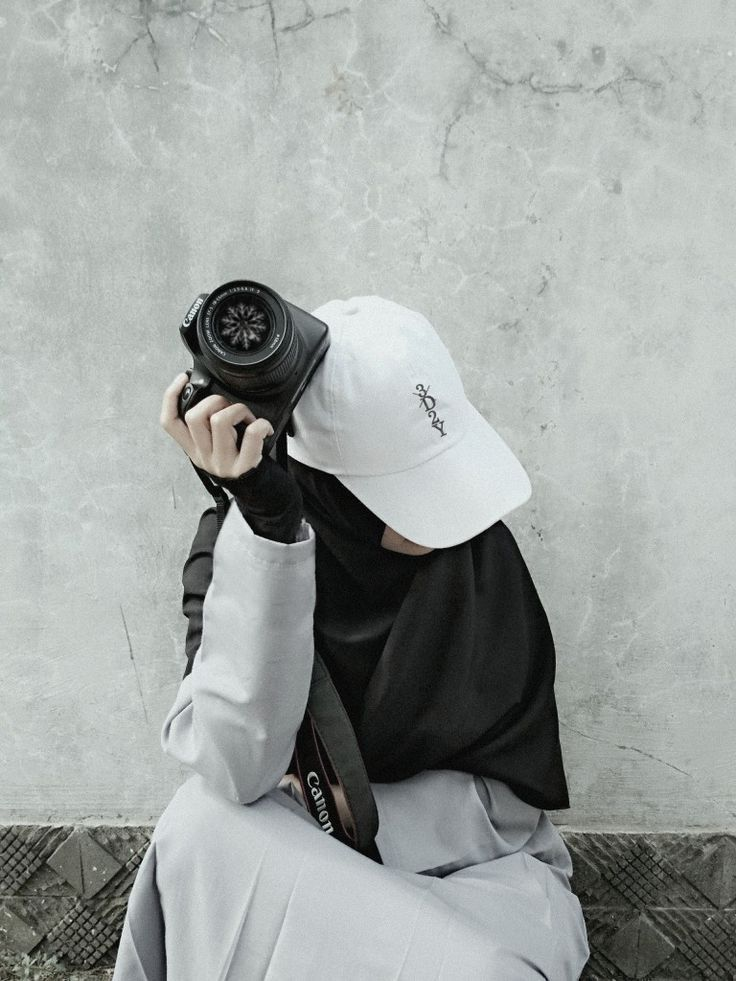

Ohreechan Editorial Team · Photography Journal
Mengapa Dokumentasi Momen Spesial Itu Penting?

Setiap orang memiliki momen berharga dalam kehidupannya, mulai dari ulang tahun, wisuda, pernikahan, hingga kebersamaan keluarga. Momen tersebut mungkin berlangsung singkat, tetapi kenangannya dapat bertahan lama.
Menyimpan Kenangan dalam Bentuk Visual
Ingatan dapat berubah seiring waktu. Melalui foto, seseorang dapat melihat kembali suasana, tempat, dan orang-orang yang pernah hadir dalam suatu peristiwa.
Mengabadikan Perjalanan dan Pencapaian
Foto wisuda dapat mengingatkan seseorang pada perjalanan pendidikan, sedangkan foto pernikahan dapat menjadi dokumentasi awal perjalanan baru bersama pasangan.
Menjadi Kenangan Bersama Keluarga
Foto keluarga menyimpan kebersamaan dalam satu bingkai dan dapat menjadi bagian dari arsip keluarga yang dikenang generasi berikutnya.
Menyampaikan Cerita Melalui Gambar
Ekspresi, suasana, pencahayaan, dan komposisi membantu foto menyampaikan cerita tanpa banyak kata.
Membuat Momen Lebih Mudah Dikenang
Foto dapat disimpan dalam album cetak atau digital. Susun berdasarkan tanggal atau peristiwa dan siapkan salinan cadangan.
Kesimpulan
Dokumentasi fotografi bukan sekadar menghasilkan gambar indah. Foto menjadi media untuk menyimpan kenangan, merekam perjalanan, dan mengabadikan cerita.
← Back to Articles